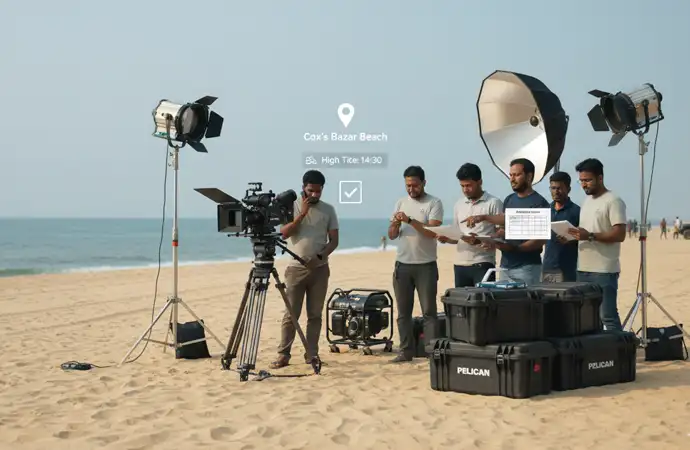

Fantastic team. They took ownership of the project. As a result, they gave very good creative inputs to improve the ad. They also tried hard to reduce the project cost... Read Ehtesham Ahmed's Full ReviewRead More
Cox's Bazar as a Filming Destination: Complete Guide for Foreign Crews (2026)
Cox's Bazar is one of the most significant filming destinations in South Asia for international documentary filmmakers, broadcast journalists, NGOs and humanitarian content producers. The world's longest natural sea beach, the largest refugee settlement on earth, active fishing communities, coastal ecosystems and a rapidly developing tourism infrastructure combine to make Cox's Bazar a destination that serves a wider range of international production types than almost anywhere else in Bangladesh. This guide covers every element of filming in Cox's Bazar for foreign crews in 2026, from permits and RRRC camp access to seasonal planning, location-by-location logistics and costs.
Why International Productions Film in Cox's Bazar
Cox's Bazar sits at the intersection of several of the most significant stories in contemporary international journalism and documentary filmmaking. No other location in Bangladesh concentrates this many distinct, internationally relevant content categories within a single geographic area.
Humanitarian and Refugee Coverage
Cox's Bazar hosts the world's largest refugee settlement, with over one million Rohingya refugees concentrated in camps in Ukhiya and Teknaf upazila. Since 2017, Cox's Bazar has been one of the most intensively covered humanitarian stories in the world, drawing crews from every major international broadcaster, newswire and documentary platform.
Coastal and Marine Visual World
The 120-kilometre beach, fishing harbour, marine transport routes, traditional boat-building communities and coastal village life provide a visual environment that is distinct from Dhaka's urban density and the Sundarbans' forest character. Cox's Bazar is the primary location for Bangladesh coastal and marine content.
Climate and Environmental Stories
Cox's Bazar is on the frontline of climate change, with coastal erosion, cyclonic storms, sea-level rise and its impact on fishing communities all generating significant international content interest. The intersection of climate displacement and the Rohingya refugee situation creates a unique multi-layered story that no other location in Bangladesh offers.
Wildlife and Conservation
The Teknaf Wildlife Sanctuary, adjacent to the camp areas in southern Cox's Bazar, is home to Asian elephants and represents one of the most significant human-wildlife conflict zones in South Asia, where elephant migration corridors intersect with the world's densest refugee settlement.
Cox's Bazar Permit and Access Overview: What Every Foreign Crew Must Know First
Cox's Bazar is not a straightforward filming destination for foreign crews. The concentration of security-sensitive zones, humanitarian areas, naval and coast guard jurisdictions and restricted camp perimeters means that permit requirements here are more layered than in most other Bangladesh locations. Understanding the permit landscape before planning your shoot dates is essential.
Standard coastal filming permit
10 to 21 working days
Ministry of Information clearance required for all foreign crews in Cox's Bazar.
Rohingya camp access (RRRC permit)
2 to 3 weeks additional
Separate from Ministry of Information permit. Applications run in parallel, not sequentially.
Journalist visa pre-clearance
2 to 4 weeks
Required before travel. Libanza Films issues official invitation letters for international crew visa applications.
Marine and security-sensitive zones
Add 1 to 2 weeks
Naval installations, coast guard zones and security perimeters require additional clearance on top of standard permit.
Drone filming (CAAB permit)
3 to 4 weeks
Most of Cox's Bazar is a yellow or restricted zone. Camp areas and airport vicinity are prohibited zones.
Recommended total lead time
6 to 8 weeks minimum
For productions combining coastal, camp and marine locations. Start permit applications as soon as shoot dates are confirmed.
All lead times above are based on productions Libanza Films has directly supported in Cox's Bazar. Individual timelines vary based on location sensitivity, editorial content and current security conditions. Libanza Films provides a specific timeline assessment for every production brief received.
Key Filming Locations in Cox's Bazar and What Each Requires
Cox's Bazar Beach and Laboni Point
The main beach at Cox's Bazar, stretching from Laboni Point southward, is the most recognisable visual landmark in the district and the default establishing shot for any Cox's Bazar production. The beach offers a wide range of visual conditions, from the intense early morning activity of returning fishing boats to the afternoon tourist crowds to the dramatic light conditions at sunset over the Bay of Bengal.
Foreign crews filming on the beach without pre-arranged permissions will be stopped by local police and tourist police. Beach filming permits are obtained through local administration alongside the standard Ministry of Information clearance. Crowd management is a practical challenge throughout daylight hours in the main tourist season.
- Best for: Establishing shots, coastal lifestyle content, tourism narratives, environmental stories
- Best time: Before 7am for returning fishing boats and low crowd density, sunset for atmospheric light
- Permit required: Ministry of Information permit plus local administration beach access
- Lead time: 2 to 3 weeks
Fishing Harbour and Boat Yard
The Cox's Bazar fishing harbour at the mouth of the Bakkhali River is one of the most active and visually productive working locations in the district. Hundreds of trawlers and wooden fishing boats operate from this harbour, with the pre-dawn departures and morning returns providing extraordinary light conditions and genuine working-community access for documentary crews.
Harbour filming requires coordination with the harbour authority and community liaison with the fishing community associations. The boat-building yards immediately adjacent to the harbour offer additional access to traditional craft construction that is highly valued by international documentary crews covering Bangladesh's coastal economy.
- Best for: Fishing community stories, coastal economy, traditional crafts, livelihood documentaries
- Best time: 4am to 7am for boat departures and returns with best light
- Permit required: Ministry of Information permit plus harbour authority and community liaison
- Lead time: 2 to 4 weeks
Inani Beach and Southern Coastal Zone
Inani Beach, 25 kilometres south of Cox's Bazar town, is a rocky beach environment that offers a visually different character from the main sandy beach, with coral rock formations exposed at low tide and a less crowded, more remote coastal aesthetic. For productions requiring natural coastal environments without tourist infrastructure in frame, Inani is a strong alternative to the main beach.
Access is more straightforward than the main beach in terms of crowd management, though the same permit requirements apply. The road south toward Teknaf passes through increasingly sensitive areas adjacent to the refugee camp zones, and convoy management becomes relevant for productions moving between Inani and locations further south.
- Best for: Natural coastal environments, rock and tidal content, less-crowded beach visuals
- Best time: Morning for tidal rock exposure, late afternoon for light quality
- Permit required: Ministry of Information permit and local administration
- Lead time: 2 to 3 weeks
Himchari National Park
Himchari National Park, 12 kilometres south of Cox's Bazar town, sits immediately adjacent to the beach on a forested hillside. It offers the unusual combination of beach environment and forest environment within a single location, with elevated viewpoints providing aerial-equivalent perspectives over the Bay of Bengal and the beach below.
A Forest Department permit is required for filming inside the park. Wildlife content within the park requires additional Forest Department coordination. The park closes at dusk, limiting late-afternoon and golden-hour filming inside the park boundary.
- Best for: Nature and environment content, elevated perspectives over the bay, forest-coastal combination
- Best time: Morning for wildlife, midday for elevated viewpoints
- Permit required: Ministry of Information permit plus Forest Department clearance
- Lead time: 3 to 4 weeks
Teknaf Peninsula and Naf River
The Teknaf Peninsula, at the southern tip of Cox's Bazar district where Bangladesh narrows to a thin strip between the Bay of Bengal and the Naf River border with Myanmar, is one of the most geographically and politically significant filming environments in the region. The Naf River, visible from Teknaf town, is the crossing point used by Rohingya refugees arriving from Myanmar.
This is a border area with significant security sensitivity. Bangladesh Border Guard and local security forces maintain active presence. Filming in Teknaf and on the Naf River requires specific border area clearance on top of the standard permit, and productions are likely to have security escort arrangements in place. Lead times are longer and approval is not guaranteed for all editorial approaches.
- Best for: Rohingya crossing narratives, border and migration stories, geopolitical documentaries
- Permit required: Ministry of Information permit plus border area clearance and security coordination
- Lead time: 5 to 8 weeks, approval subject to editorial content assessment
Saint Martin's Island
Bangladesh's only coral island, 9 kilometres south of Teknaf in the Bay of Bengal, is a genuinely unique filming environment that few international productions have documented in depth. The coral reef, the fishing community and the island's isolation create a visual world unlike the mainland Cox's Bazar coast.
Access requires boat transit from Teknaf (approximately 2 hours each way in good conditions), Bangladesh Navy clearance for maritime filming, and weather-dependent planning since the island is inaccessible during the monsoon season from June to September. Overnight accommodation on the island is available but limited, and equipment transport by boat requires careful waterproofing and handling planning.
- Best for: Island community stories, coral reef environment, marine conservation, isolated coastal life
- Best time: November to May only, monsoon season inaccessible
- Permit required: Ministry of Information permit plus Bangladesh Navy clearance and local administration
- Lead time: 4 to 6 weeks
Filming in the Rohingya Camps: A Complete Guide for International Productions
The Rohingya refugee camps in Ukhiya and Teknaf upazila represent the most significant humanitarian filming environment in South Asia and one of the most complex access challenges in international documentary and news production. This section covers everything a foreign crew needs to understand before planning camp access.
The Scale and Context
Over one million Rohingya refugees live in the camps concentrated around Kutupalong and Balukhali in Ukhiya upazila, making this the largest refugee settlement on earth. The camps are managed through a coordination structure involving the Bangladesh government (represented by the RRRC office), UNHCR, IOM and hundreds of national and international NGOs. Each of these entities has its own relationship with the camp communities and its own perspective on media access.
The RRRC Permit: What It Is and How to Get It
The Refugee Relief and Repatriation Commissioner (RRRC) is the Bangladesh government authority responsible for managing the refugee response in Cox's Bazar. All filming inside the camp areas requires an RRRC permit, which is separate from and additional to the standard Ministry of Information filming permit.
What the RRRC Application Requires
- Full project description including editorial purpose and intended distribution
- Complete crew list with passport details and organisational affiliations
- Specific camp blocks or areas where filming is planned
- Safeguarding protocol documentation for filming with vulnerable communities
- Consent procedures for filming individual refugees
- NGO or UN agency letter of support (strongly recommended, not always mandatory)
- Ministry of Information permit (must be obtained first or in parallel)
RRRC Permit Practical Realities
- Processing time: 2 to 3 weeks from complete application submission
- Approval is not automatic, editorial content and organisational credibility are assessed
- Government liaison officers may accompany filming inside camp areas
- Access has tightened since 2024 due to security concerns in parts of the camps
- Specific camp blocks may be restricted regardless of overall RRRC permit status
- Individual subject consent is a legal requirement and cannot be assumed from RRRC permit alone
Community Liaison and Ethical Production in the Camps
The RRRC permit gives legal access to the camp areas. It does not give access to individual refugees. The distinction matters enormously for production quality and ethical compliance.
Productions that arrive in the camps with only a permit and no community relationships find cooperation from refugees is limited. Refugees in Cox's Bazar have been filmed extensively since 2017 and many communities have developed wariness toward camera crews, particularly those without established NGO relationships or community intermediaries.
Productions that work through established NGO partners, community leaders or refugee community representatives gain access to stories and individuals that permit-only approaches cannot reach. Libanza Films coordinates community liaison for Cox's Bazar camp productions including NGO introduction, community leader engagement and translator provision with specific camp dialect familiarity.
Safeguarding Requirements for Camp Productions
Any production filming inside the Rohingya camps must comply with safeguarding protocols that go beyond standard documentary consent practices:
- Individual informed consent from every person filmed, in a language they understand, explained by a qualified interpreter
- Specific consent procedures for filming children, which requires parental or guardian consent and in some cases NGO child protection officer involvement
- No filming of individuals in ways that could identify them to Myanmar authorities or put family members still in Myanmar at risk
- Compliance with UNHCR and agency-specific media guidelines where the production has any association with those organisations
- Data protection for any footage involving identifiable individuals, covering storage, transmission and final editorial use
Libanza Films provides pre-production safeguarding briefing for all camp productions and can arrange child protection officer consultation where required.
Seasonal Guide to Filming in Cox's Bazar
Season choice in Cox's Bazar affects not just weather but access, logistics and the visual character of every location in the district. The two main seasons have fundamentally different production profiles.
October to March: Recommended Season
Dry Season
- Calmer seas: marine filming and boat work fully accessible
- Clear skies: coastal and beach cinematography at its best
- Lower humidity: crew comfort and equipment safety both improved
- Saint Martin's Island: accessible November to May only
- Peak tourist season: main beach more crowded, early morning filming essential
- Fishing season: harbour activity at maximum from November to February
June to September: Monsoon Season
Challenging Season
- Marine access: severely limited, boat work dangerous in open water
- Saint Martin's Island: inaccessible by boat during most of this period
- Dramatic weather visuals: storm light, heavy rain, flooding stories
- Camp conditions: monsoon flooding in low-lying camp areas is a major humanitarian issue and a significant story in itself
- Equipment: all equipment requires waterproofing, tropical humidity management essential
- Cyclone risk: June to October is peak cyclonic season for the Bay of Bengal
Monsoon season is not automatically a reason to avoid Cox's Bazar. Productions covering camp flooding, coastal erosion or climate vulnerability specifically need the monsoon season. The planning requirements are more demanding but the content is often more powerful. Libanza Films has supported productions in Cox's Bazar across all seasons.
Equipment and Logistics for Cox's Bazar Productions
Getting Equipment to Cox's Bazar
Cox's Bazar is accessible from Dhaka by domestic flight (approximately 45 minutes, multiple daily flights) or by road (approximately 10 to 12 hours). The domestic airport in Cox's Bazar has a 20kg checked baggage limit per person on domestic routes, which creates equipment weight challenges for crews arriving direct with full kit. Road transport from Dhaka avoids this constraint and allows larger equipment packages to travel without airline restrictions.
Libanza Films coordinates equipment transport from Dhaka to Cox's Bazar by road for productions requiring larger camera, lighting or sound packages, and arranges local equipment rental for shorter productions where travel with full kit is not practical.
Accommodation in Cox's Bazar
Cox's Bazar has a wide range of accommodation from international-standard hotels in Cox's Bazar town to basic guesthouses in Ukhiya for productions based near the camp areas. Productions combining beach filming and camp access typically need to manage accommodation across two base locations, since Cox's Bazar town and the Ukhiya camp area are approximately 35 kilometres apart.
Libanza Films arranges accommodation appropriate to crew size and base location, including generator-backed accommodation for productions working in areas with unreliable power supply.
Transport in Cox's Bazar
The road between Cox's Bazar town and the southern camp areas passes through active beach resort zones, fishing community areas and increasingly security-managed zones as you move south toward Ukhiya and Teknaf. Dedicated vehicles with local drivers are essential, both for practical access and for safety compliance in security-sensitive areas.
Marine transport for harbour, coastal and offshore filming requires specific boat arrangements. Libanza Films coordinates local boat hire with experienced operators for productions requiring water access, including appropriate safety equipment and life jacket provision.
Production Costs for Cox's Bazar
Cox's Bazar production costs are higher than equivalent Dhaka-only productions due to the travel logistics from Dhaka, the longer permit lead times for sensitive locations and the additional community liaison requirements for camp productions. The following ranges are based on typical international productions Libanza Films has supported in Cox's Bazar.
Fixer-Only
USD 2,000 to 8,000
Permits (including RRRC coordination), coastal authority liaison, access management and on-ground fixer presence throughout the Cox's Bazar shoot.
Hybrid Support
USD 5,000 to 15,000
Fixer services plus local DP, camera, sound and production staff. You bring your director and key creative and we build the Cox's Bazar operation around them.
Full Line Production
USD 8,000 to 25,000+
We execute the entire Cox's Bazar shoot on your brief, from pre-production and RRRC permits through to filming and delivery, under your creative direction.
RRRC permit facilitation, marine transport, community liaison for camp productions and Dhaka-to-Cox's Bazar equipment transport are priced separately and confirmed once we have your production dates, locations and crew size. All costs are itemised with no bundled packages and no hidden markups.
How Libanza Films Supports Cox's Bazar Productions

Libanza Films has directly supported international productions in Cox's Bazar, including the documentary production by Maria Jose, an independent audiovisual producer from Ecuador, for whom we provided full on-ground production support including coastal location access, logistics and local crew coordination.
Our Cox's Bazar production support covers:
- Ministry of Information permit application and management
- RRRC permit application for camp access productions
- Journalist visa invitation letters for all foreign crew
- Community liaison and NGO introduction for camp-based productions
- Safeguarding briefing and consent protocol support
- Beach, harbour and marine location access coordination
- Local crew provision including translators with camp dialect familiarity
- Equipment transport from Dhaka and local rental coordination
- Accommodation across Cox's Bazar town and Ukhiya base locations
- Marine transport and boat hire with experienced local operators
- On-ground production representative present every shoot day
Combining Cox's Bazar with Other Bangladesh Locations
Many international productions combine Cox's Bazar with other Bangladesh filming locations as part of a wider Bangladesh production plan. The most common combinations and their logistics:
- Cox's Bazar plus Chittagong: Approximately 3 hours by road. The most common combination for productions covering Bangladesh's coastal economy, humanitarian response and industrial shipping in a single trip. Permits for both locations run simultaneously under a single production plan. See our Film Fixer in Chittagong page.
- Cox's Bazar plus Dhaka: 45 minutes by domestic flight. The standard two-location Bangladesh shoot for NGO, broadcast and documentary productions that need both the humanitarian south and the political and economic capital. See our Film Fixer in Dhaka page.
- Cox's Bazar plus Sundarbans: Requires routing through Dhaka or Chittagong. Technically demanding multi-location shoot but increasingly requested for climate productions covering both the coastal humanitarian situation and the world's largest mangrove ecosystem. See our Film Fixer in Sundarbans page.
All multi-location productions are coordinated under a single production support plan with a single point of contact. No need to manage separate local partners across different regions.
Frequently Asked Questions, Filming in Cox's Bazar Bangladesh
Yes. All foreign crews filming in Cox's Bazar require a Ministry of Information filming permit, which takes 10 to 21 working days. Marine zones, beach areas and security-sensitive sites require additional local administration and coast guard coordination on top of the standard permit.
Filming inside the Rohingya refugee camps requires a separate permit from the Refugee Relief and Repatriation Commissioner (RRRC), issued alongside the standard Ministry of Information permit. RRRC applications require documentation of project purpose, crew details and safeguarding protocols, and typically need 2 to 3 weeks of advance preparation. Libanza Films manages the full RRRC application process for international productions.
October to March offers the best conditions for filming in Cox's Bazar, with calmer seas, clearer skies and lower humidity. The monsoon season from June to September brings dramatic weather visuals but limits marine access and increases logistical complexity significantly.
Fixer-only support for Cox's Bazar productions starts from USD 2,000 to 8,000. Hybrid support with local crew and equipment runs USD 5,000 to 15,000. Full line production partnership starts from USD 8,000 to 25,000 and above, depending on duration, crew size and the complexity of locations including any RRRC-permitted camp access.
No. Cox's Bazar beach, the fishing harbour and coastal areas require permissions from local administration and in some cases coast guard coordination for foreign crews. Arriving without pre-arranged access and a local fixer routinely results in filming being stopped by local authorities.
Drone filming in Cox's Bazar requires Civil Aviation Authority of Bangladesh (CAAB) permission and must avoid restricted zones near the airport, naval installations and camp areas. Allow 3 to 4 weeks for CAAB application. Flying without permission results in equipment confiscation.

About the Author
Azizul Hoque Shiplu
Founder and Film Director of Libanza Films. Azizul has worked in commercial film production and advertising since 2007, beginning his career at Ogilvy and Mather and training at the Zahir Raihan Film Institute. He has personally overseen Cox's Bazar productions for international clients including María José (Ecuador) and managed permit processes across Cox's Bazar beach locations, Rohingya camp access via RRRC, Teknaf border areas and Saint Martin's Island. The permit timelines, access realities and seasonal guidance in this guide reflect direct production experience in Cox's Bazar.
Related Reading
- Film Fixer in Cox's Bazar — Full Service and RRRC Permit Guide
- Film Fixer in Dhaka — Permits, Old City Access and Broadcast News Support
- Film Fixer in Sundarbans — Forest Permits, Boat Logistics and Wildlife Safety
- Film Fixer in Sylhet — Tea Estates, Haor Wetlands and Diaspora Productions
- Film Fixer in Bangladesh — National Coverage, Pricing and International Clients
- Filming Permits and Media Visa Guidance in Bangladesh
- How to Hire a Film Fixer in Bangladesh: The Complete Guide (2026)
- Drone Filming Permits in Bangladesh: Complete Guide (2026)
- Filming in Bangladesh from the UK and USA: Guide for Diaspora Filmmakers (2026)
- Filming Permits in Bangladesh Explained: Step-by-Step Guide for Foreign Crews
- How Much Does a Film Fixer Cost in Bangladesh? (2026 Guide)
- NGO and Documentary Filming in Bangladesh: What Foreign Teams Should Know
- Filming Costs in Bangladesh: Budget Guide for International Productions (2026)
- International Shoot in Bangladesh: 2026 Filming Guide
Planning a Production in Cox's Bazar?
Share your production brief including dates, locations, whether you need camp access and your crew size. Libanza Films will return a full access assessment, RRRC permit timeline and itemised cost estimate within five working days.
Customer Reviews

Very dedicated team! Apprecite their enthusiasm, creativity and passion for their work... Read Md. Jamil Hossain Chowdhury Rahat's Full ReviewRead More

Libanza specializes in creating captivating films and advertisements with compelling narratives and stunning visuals... Read Riad Full ReviewRead More
Get in Touch
Our Clients
Diverse industries, trusted partnerships. From advertising agencies to corporate entities and non-profit organizations, our clients rely on us to bring their creative visions to life. With passion, expertise, and attention to detail, we deliver exceptional video production solutions that exceed expectations. Join our esteemed clientele and experience the power of captivating storytelling with Libanza Films.